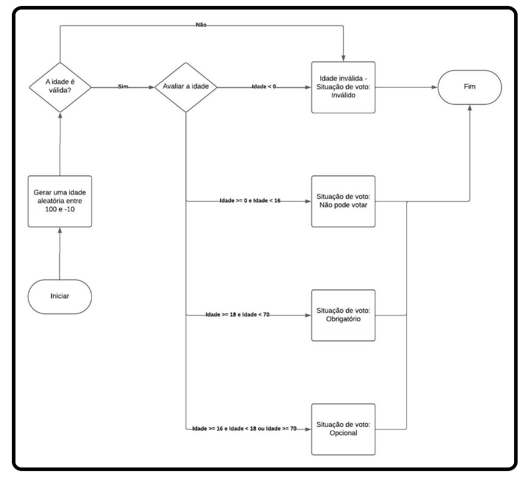
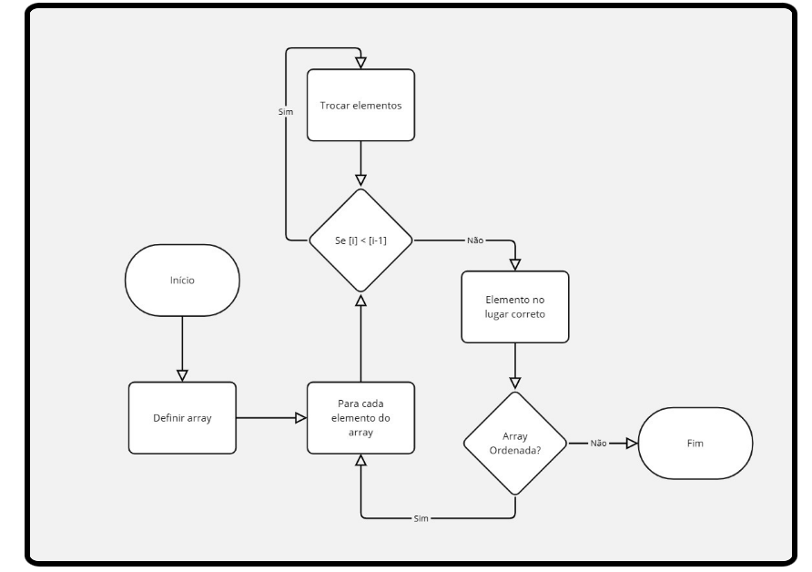
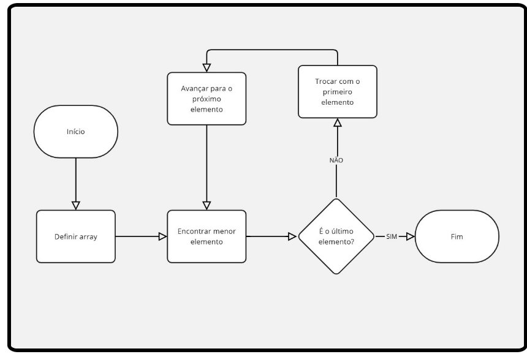
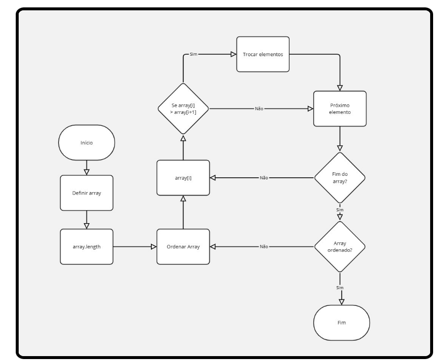
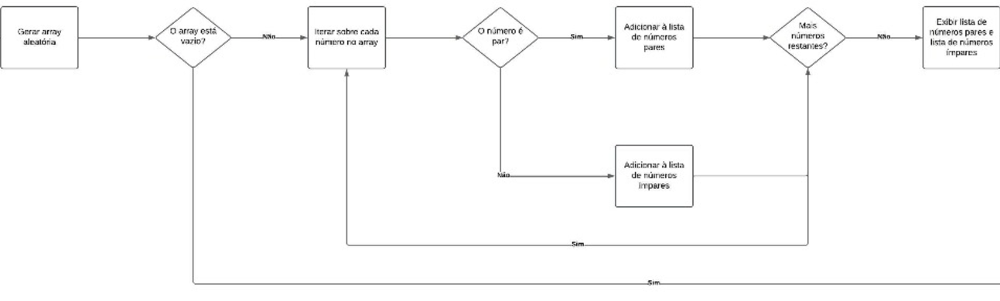

O que são Fluxogramas?
Fluxogramas são representações gráficas de algoritmos, sistemas ou processos. Eles são usados para ilustrar a sequência de ações ou decisões necessárias para realizar uma tarefa. Em um fluxograma, cada passo do algoritmo é representado por um símbolo específico, e as setas indicam o fluxo de execução.
Exemplo via fluxograma de um algoritmo que a empresa implementa utilizando estrutura IF-ELSE:

Simbologia de Fluxograma
Os fluxogramas usam símbolos específicos para representar operações de um processo. O oval (ou elipse) indica o início e o fim. O retângulo é usado para um processo ou ação, como cálculos ou atribuições. O losango representa uma decisão, com opções baseadas em uma condição. O paralelogramo é usado para entrada/saída, como ler ou imprimir dados. O círculo é um conector, usado para ligar partes do fluxograma. O retângulo com bordas duplas representa uma pré-definição ou subprocesso. O paralelogramo invertido indica armazenamento de dados, como salvar valores em variáveis.
Exemplo dos algoritmos buble Sort, insertion sort e selection sort em fluxograma:
  
Exemplo de fluxograma com array de números pares e ímpares:

Software utilizado para fazer Fluxogramas - Lucidchart
O Lucidchart é uma ferramenta online para criar fluxogramas e diagramas. Com ele você pode arrastar formas como retângulos (ações), losangos (decisões) e ovais (início/fim) para construir seu fluxograma, conectando-as com setas. Personalizar texto, cores e exporte ou compartilhar com sua equipe. É ideal para colaboração em tempo real e fácil de usar!